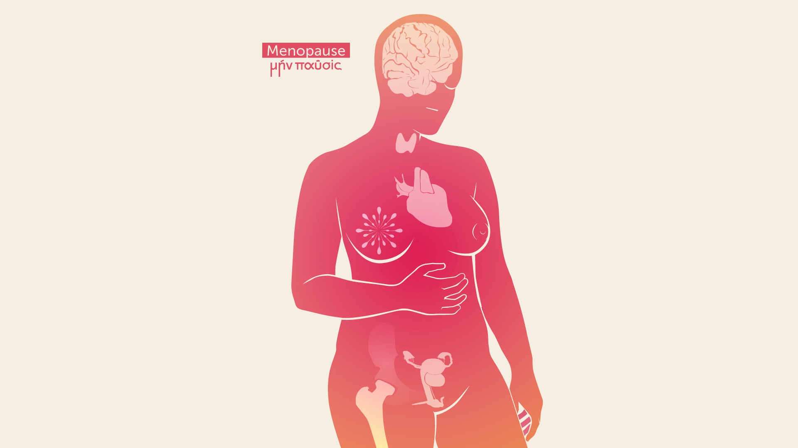
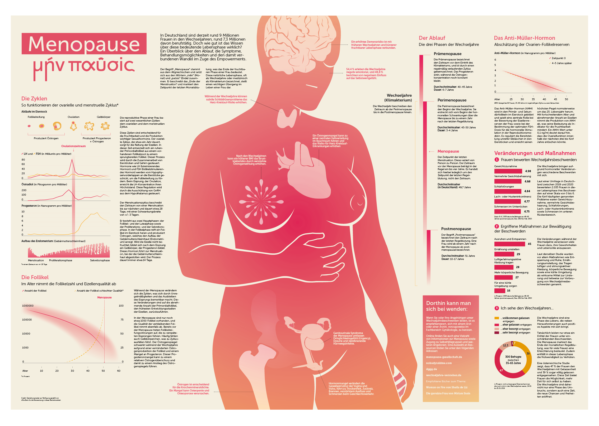
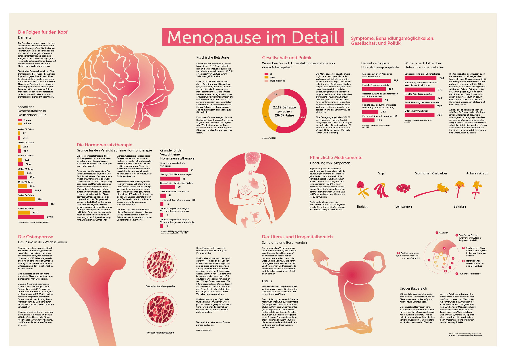

Mēn Pausis – Empowerment in den Wechseljahren
In Deutschland leben derzeit etwa 9 Millionen Frauen in den Wechseljahren, davon sind etwa 7,3 Millionen erwerbstätig. Doch wie gut ist das Wissen über diese wichtige Lebensphase? Diese Bachelorarbeit soll im Zuge des Empowerments einen Überblick über Verlauf, Symptome, Behandlungsmöglichkeiten und die damit verbundenen Veränderungen liefern. In diesem 2-seitigen Zeitungsartikel zum Thema Wechseljahre, wird mit Hilfe von Infodesign dem Thema auf den Grund gegangen. Ziel der Arbeit ist es, den aktuell und zukünftig Betroffenen einen Überblick zu geben, sie zu "empowern" und ihnen das nötige Wissen zu vermitteln, um informierte Entscheidungen für sich selbst treffen zu können.


